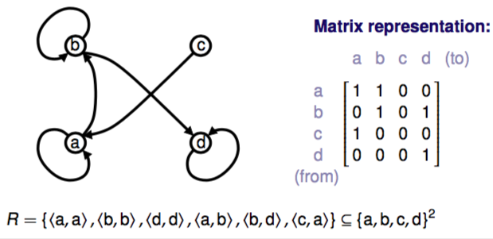
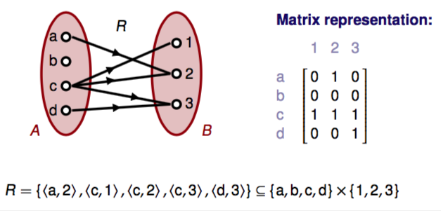
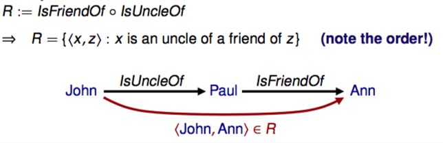
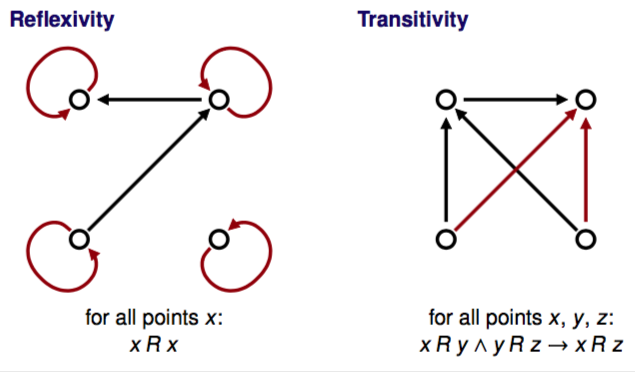
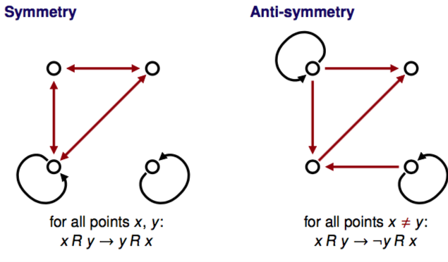

Cartesian product of sets
A × B := {<a,b> : a ∈ A ∩ b ∈ B}
A × A := A2
#(A×B) = #A ⋅ #B
Binary relation: relation of type A × B or A × A
Relation in set A: relation of type A × A
Infix notation:
x R y — <x, y> ∈ R
Visualisation
directed graphs & matrix:

Venn diagrams & matrix:

Inverse of binary relation
Inverse of R: R-1 := {<x,y> : <y,x> ∈ R}
R ⊆ A × B => R-1 ⊆ B × A
For Venn diagrams, you reverse the arrows.
Composite relations
R ∘ S := {<x,z> : x S y ∩ y R z for some y}

Composition is associative.
Inverse: (R ∘ S)-1 = S-1 ∘ R-1
Properties of relations

